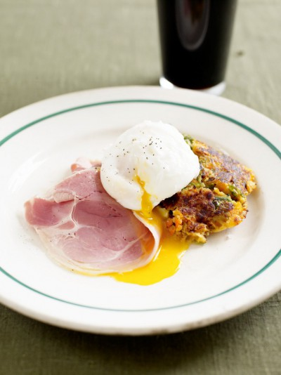

Bubble and squeak with ham and eggs

Ingredients
Instructions
- If you managed to get through all of the vegetables you served with your Christmas dinner then just boil the potatoes and raw vegetables together in a large pan of salted, boiling water for 15 to 20 minutes until they are all cooked through. Drain and put to one side to steam dry. If using leftover veg, you can add these directly to the cooked potatoes now.
- Heat a lug of olive oil and a good knob of butter in a large frying pan over a medium heat. Add the potatoes and vegetables and gently mash them up in the pan to give a nice bubble and squeak mixture. Pat it down into a thick pancake shape and keep frying on a medium heat for about 30 minutes, checking it every 5 minutes or so to make sure the bottom isn’t burning. If it is, then lower the heat and keep watching it. Once the bottom turns golden, carefully flip it over bit by bit and mash it back into itself. Pat it out flat again and continue cooking until really crisp all over. If it still hasn’t browned, then pop the pan (only if it’s ovenproof though!) under a hot grill for 5 minutes.
- When the bubble and squeak is nearly ready to come off the heat, start on the eggs. Bring a large pan of salted water to the boil then turn down to a simmer and add the 4 eggs. Remember when it comes to poaching eggs, the fresher the eggs the better the result. Cook for 4 to 5 minutes for a soft to firm egg or a bit longer if you prefer your eggs a little harder.
- Serve a slice of the bubble and squeak topped with a seasoned poached egg, and 2 slices of ham per person. If you ask me, I think this is brilliant with a cold Guinness!
Comments